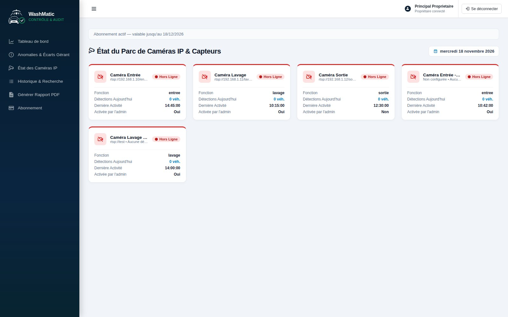
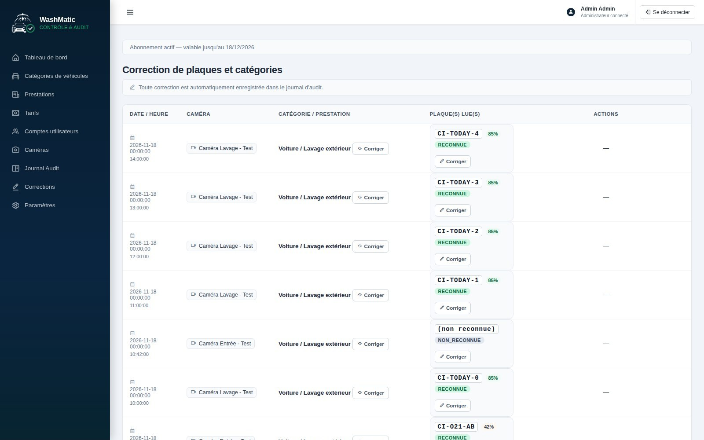
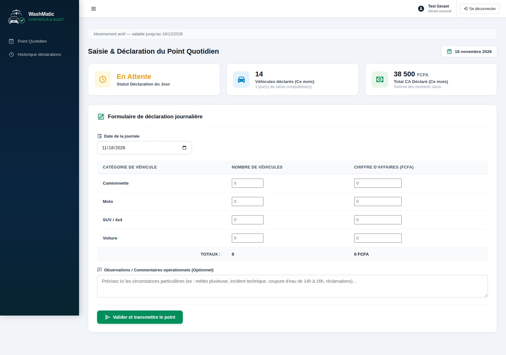

← Tous les projets
Étude de cas · Projet d'équipe en stage
WashMatic
Application de gestion pour lavage auto réalisée en équipe pendant mon stage. J'ai travaillé sur la chaîne caméra en Python et participé à une partie du front-end.

Contexte
WashMatic rassemble plusieurs espaces pour un centre de lavage auto : suivi des passages, état des caméras, gestion des tarifs et déclarations quotidiennes. L'application a été réalisée par une équipe de trois pendant mon stage.
Ma contribution
J'ai pris en charge la partie liée aux caméras : traitement en Python avec OpenCV, détection avec YOLO et lecture de plaques avec EasyOCR. J'ai aussi participé à certaines vues du front-end ainsi qu'au MCD et à la base de données. Le reste de l'application est un travail d'équipe.
Fonctions visibles de l'application
- Suivre l'état des caméras d'entrée, de lavage et de sortie, ainsi que les passages associés.
- Consulter les plaques et catégories détectées, puis corriger une lecture et garder une trace dans le journal d'audit.
- Gérer les catégories de véhicules, les prestations, les tarifs, les comptes et les caméras depuis l'espace d'administration.
- Comparer les volumes et montants remontés par l'application avec le point quotidien déclaré par le gérant.
Outils et périmètre
- Python, OpenCV, YOLO et EasyOCR pour le traitement caméra et la lecture de plaques.
- Laravel et PHP pour l'application web d'équipe; j'ai contribué à une partie de son interface.
- La base SQLite utilisée pour les captures est une base locale de test, pas une base de production.
- Le paiement GeniusPay affiché dans les écrans est simulé; aucun paiement réel n'a été effectué.
Quelques écrans de WashMatic



Retour à la sélectionTous les projets